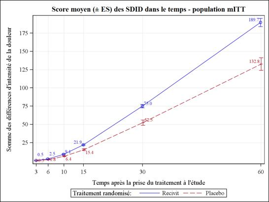

RÉSUMÉ DES CARACTÉRISTIQUES DU PRODUIT
ANSM - Mis à jour le : 27/01/2014
RECIVIT 533 microgrammes, comprimé sublingual
2. COMPOSITION QUALITATIVE ET QUANTITATIVE
RECIVIT 533 microgrammes, comprimé sublingual.
Chaque comprimé contient 840 microgrammes de citrate de fentanyl, equivalent à 533 microgrammes de fentanyl.
Excipient à effet notoire :
Chaque comprimé contient 0,651 mg de sodium.
Pour la liste complète des excipients, voir rubrique 6.1.
Comprimé blanc, triangulaire, convexe, de 5,6 mm de hauteur, avec une impression « 5 » en encre noire sur une face.
4.1. Indications thérapeutiques
Les patients recevant un traitement de fond opioïde sont ceux prenant au moins 60 mg de morphine par voie orale par jour, au moins 25 microgrammes par heure de fentanyl transdermique, au moins 30 mg d'oxycodone par jour, au moins 8 mg d'hydromorphone par voie orale par jour ou une dose équianalgésique d'un autre opioïde pendant une durée d'au moins une semaine.
4.2. Posologie et mode d'administration
Afin de réduire au minimum les risques d'effets indésirables liés aux opioïdes et de déterminer la dose la plus "efficace" adaptée à un patient, il est indispensable que les patients soient étroitement surveillés par des professionnels de santé durant la période de titration. RECIVIT n'est pas interchangeable sur la base d'une équivalence de dose avec d'autres médicaments contenant du fentanyl à action rapide prescrits pour les accès douloureux paroxystiques d'origine cancéreuse, étant donné que les profils pharmacocinétiques et/ou les schémas posologiques de ces produits sont significativement différents. Les patients doivent être informés du fait qu’ils ne peuvent pas prendre deux formulations différentes de fentanyl simultanément pour le traitement d’accès douloureux paroxystiques, et d’arrêter tout autre produit à base de fentanyl antérieurement prescrit pour les accès douloureux paroxystiques avant de passer à RECIVIT. Le nombre de dosages différents de RECIVIT prescrit au patient, à tout moment, doit être réduit au minimum pour éviter les erreurs et un surdosage potentiel.
RECIVIT doit être placé directement sous la langue et le plus loin possible.
Les comprimés de RECIVIT ne doivent pas être avalés, mais ils doivent fondre complètement dans la cavité sublinguale, sans être mâchés ni sucés. Les patients doivent être informés qu’ils ne doivent pas manger ni boire avant dissolution complète du comprimé sublingual.
Si, 30 minutes après la prise, il reste des morceaux de comprimé de RECIVIT, ils peuvent être avalés.
Les patients souffrant de sècheresse buccale peuvent utiliser de l’eau pour humidifier la muqueuse buccale avant la prise de RECIVIT.
Une fois sorti de la plaquette thermoformée, le comprimé ne doit pas être conservé étant donné que l’intégrité du comprimé ne peut pas être garantie et un risque d’exposition accidentelle peut survenir (voir aussi rubrique 4.4 pour les mises en garde concernant l’enfant).
Les patients doivent être informés de conserver RECIVIT dans un endroit sous clé, hors de la portée des enfants.
Titration de la dose
Avant de déterminer la posologie optimale de RECIVIT pour chaque patient, il est nécessaire de s’assurer que la douleur de fond est contrôlée par un traitement opioïde et qu’il ne présente pas plus de 4 épisodes d’ADP par jour.
L’objet de la titration de la dose consiste à identifier une dose d’entretien optimale pour le traitement continu des accès douloureux paroxystiques. Cette dose optimale devrait apporter une analgésie adéquate avec un niveau acceptable d’effets indésirables.
La dose optimale de RECIVIT doit être déterminée individuellement, par titration progressive, pour chaque patient. Plusieurs dosages sont disponibles et peuvent être utilisés pendant la phase de titration. La dose initiale de RECIVIT utilisée doit être de 133 microgrammes, en augmentant la posologie si nécessaire, dans la gamme des dosages disponibles.
Les patients doivent être surveillés attentivement jusqu’à ce qu’une dose optimale ait été atteinte.
La substitution d’autres produits contenant du fentanyl par RECIVIT ne doit pas être effectuée avec un rapport de 1:1 compte tenu des différents profils d’absorption. Si les patients passent d’un autre produit contenant du fentanyl à RECIVIT, une nouvelle titration de la dose avec RECIVIT est nécessaire.
Le schéma posologique suivant est recommandé pour la titration. Le médecin doit toutefois toujours prendre en compte les besoins cliniques du patient, son âge et toute pathologie associée.
Tous les patients doivent débuter le traitement avec un seul comprimé sublingual de 133 microgrammes. Si une analgésie adéquate n’est pas atteinte dans les 15 à 30 minutes suivant l’administration d’un comprimé sublingual, un comprimé sublingual supplémentaire (deuxième) de 133 microgrammes peut être ajouté. Si le traitement d’un accès douloureux paroxystique nécessite plus d’une unité de dosage, une augmentation de la dose jusqu’au dosage de comprimé suivant devra être envisagée (voir figure ci-dessous). L’augmentation posologique doit se poursuivre par étape jusqu’à obtention d’une analgésie adéquate. A partir de la dose de 533 microgrammes, le dosage du comprimé sublingual supplémentaire (deuxième) peut être de 133 à 267 microgrammes. Cela est illustré dans le tableau ci-dessous. Pendant la phase de titration, le nombre maximal de comprimés sublinguaux à administrer pour un seul accès douloureux paroxystique ne doit pas être supérieur à deux (2).
Procédé de titration de RECIVIT
|
Dosage (microgrammes) du premier comprimé par accès douloureux paroxystique |
Dosage (microgrammes) du comprimé supplémentaire (second), à administrer Si nécessaire 15-30 minutes après le premier comprimé |
|
133 |
133 |
|
267 |
133 |
|
400 |
133 |
|
533 |
267 |
|
800 |
- |
Si la dose supérieure permettant d’obtenir une analgésie efficace provoque des effets indésirables considérés comme inacceptables, une dose intermédiaire peut être administrée (en utilisant le comprimé de 67 ou de 133 microgrammes).
Les doses supérieures à 800 microgrammes n’ont pas été évaluées au cours des études cliniques.
Afin de minimiser le risque d’effet indésirable lié aux opioïdes et d’identifier la dose appropriée, les patients doivent être suivis soigneusement par un professionnel de santé pendant le processus de titration.
Traitement d’entretien
Lorsque la dose appropriée, qui peut être supérieure à un comprimé, a été déterminée, le patient doit continuer à utiliser cette dose. La consommation doit être limitée à quatre doses de RECIVIT par jour.
Réajustement de la dose
En cas d’observation d’une modification importante de la réponse à la dose de titration (analgésie ou effet indésirable) une réadaptation de la dose peut être nécessaire pour assurer le maintien d’une dose optimale. Pour l'ajustement de la dose, les mêmes principes que ceux décrits pour la titration s'appliquent (voir ci-dessus).
Si le patient présente systématiquement plus de quatre accès douloureux paroxystiques par jour, la posologie de l’opioïde à longue durée d’action utilisé pour traiter la douleur de fond doit être réévaluée. En cas de modification de cet opioïde à longue durée d’action ou de sa posologie, la dose de RECIVIT doit être réévaluée et éventuellement réadaptée pour garantir l’utilisation d’une dose optimale.
Toute nouvelle adaptation de la dose d’un analgésique, quel qu’il soit, doit être surveillée par un professionnel de santé.
Arrêt du traitement
Chez des patients poursuivant leur traitement analgésique opioïde de fond pour une douleur persistante, le traitement par RECIVIT peut généralement être immédiatement arrêté lorsqu'il ne s'avère plus nécessaire.
Chez les patients devant arrêter tout traitement opioïde, la dose de RECIVIT doit être prise en compte avant toute réduction progressive des opioïdes, afin d’éviter l’apparition de symptômes de sevrage brutal.
Utilisation chez les sujets âgés
Les sujets âgés se sont avérés plus sensibles aux effets du fentanyl administré par voie intraveineuse. Par conséquent, la titration impose des précautions particulières chez ces patients. Le fentanyl est éliminé plus lentement chez le sujet âgé et sa demi-vie terminale d'élimination est plus longue, ce qui peut entraîner une accumulation du principe actif et majorer les risques d'effets indésirables.
Aucune étude clinique spécifique n'a été menée avec RECIVIT chez le sujet âgé.
Utilisation chez les patients insuffisants hépatiques ou rénaux
Il convient d'être particulièrement prudent durant la phase de titration chez les patients présentant une anomalie des fonctions rénales ou hépatiques (voir rubrique 4.4).
Population pédiatrique
Compte tenu de l’absence de données de sécurité et d’efficacité pour cette population, RECIVIT ne doit pas être utilisé chez les enfants et adolescents âgés de moins de 18 ans.
· Hypersensibilité à la substance active ou à l’un des excipients mentionnés à la rubrique 6.1.
· Les patients n’ayant jamais reçu de traitement de fond opioïde (voir rubrique 4.1) en raison du risque accru de dépression respiratoire.
· Administration concomitante ou pendant les 2 semaines suivant l’utilisation d'inhibiteurs de la monoamine-oxydase (IMAO).
· Dépression respiratoire sévère ou pathologies pulmonaires obstructives sévères.
4.4. Mises en garde spéciales et précautions d'emploi
Chez tout patient ambulatoire, il est recommandé d'évaluer les éventuels risques d'exposition accidentelle d'enfants au médicament.
Le produit ne doit en aucun cas être administré à des patients ne recevant pas un traitement de fond par des opioïdes, en raison d'un risque accru de dépression respiratoire pouvant être fatale.
Il est important que le traitement opioïde à longue durée d’action utilisé pour le traitement des douleurs de fond du patient ait été stabilisé avant l’instauration du traitement par RECIVIT et que le patient continue à être traité avec l’opioïde à longue durée d’action pendant la prise de RECIVIT.
Comme avec tous les opioïdes, une accoutumance, une dépendance physique et/ou psychologique et l'abus de fentanyl sont susceptibles de se produire. Cependant, l’addiction iatrogène est rare dans le cadre de l'utilisation strictement thérapeutique des opioïdes. Le risque est considéré comme faible chez les patients cancéreux souffrant d'accès douloureux paroxystiques, mais peut être plus élevé chez les patients ayant des antécédents d’abus d’autres substances ou de dépendance à l'alcool.
Les patients traités par des opioïdes requièrent une surveillance particulière en ce qui concerne les signes d'abus ou d'addiction.
Comme pour tous les opioïdes, l’utilisation de fentanyl est associée à un risque de dépression respiratoire cliniquement significatif. La phase de titration doit être réalisée avec une prudence particulière chez les patients atteints d’une broncho-pneumopathie chronique obstructive non-sévère ou d’une autre pathologie les prédisposant à une dépression respiratoire, étant donné que même aux doses thérapeutiques usuelles, RECIVIT peut réduire davantage la fonction respiratoire pouvant entraîner une insuffisance respiratoire.
RECIVIT ne doit être administré qu’avec une extrême prudence aux patients susceptibles de présenter une sensibilité particulière aux effets cérébraux de l’hypercapnie, comme les patients présentant des signes d’hypertension intracrânienne ou des troubles de la conscience. Les opioïdes pouvant masquer l’évolution clinique chez les patients atteints de traumatismes crâniens, ils ne doivent être utilisés qu’en cas d’absolue nécessité.
Administré par voie intraveineuse, le fentanyl peut provoquer une bradycardie. RECIVIT doit être utilisé avec précaution chez les patients présentant une bradyarythmie.
De plus, RECIVIT doit être administré avec prudence chez les patients présentant une insuffisance hépatique ou rénale. L’influence d’un dysfonctionnement hépatique et rénal sur la pharmacocinétique du médicament n’a pas été évaluée. Toutefois, lors d’une administration intraveineuse, il a été démontré que la clairance du fentanyl est altérée en cas d'insuffisance hépatique ou rénale, en raison d'une altération de la clairance métabolique et des protéines plasmatiques. Après administration de RECIVIT, l’insuffisance hépatique et rénale peut augmenter la biodisponibilité du fentanyl absorbé et réduire sa clairance systémique, ce qui pourrait entraîner une augmentation et une prolongation des effets opioïdes. Une prudence particulière est donc de rigueur lors de la phase de titration chez des patients présentant une insuffisance hépatique ou rénale modérée ou sévère.
Le traitement avec RECIVIT doit être envisagé avec prudence chez les patients présentant une hypovolémie ou une hypotension.
RECIVIT n’a pas été étudié chez les patients présentant des lésions buccales ou une mucite. Un risque d’augmentation de l’exposition systémique au médicament peut exister chez ce type de patients et une prudence particulière est donc recommandée pendant la titration.
Ce médicament contient 0,651 mg de sodium par comprimé. Ceci est à prendre en considération chez les patients suivant un régime pauvre en sodium.
4.5. Interactions avec d'autres médicaments et autres formes d'interactions
L'administration concomitante d’inducteurs du CYP3A4 tels que la rifampicine, la rifabutine, la carbamazepine, le phénobarbital ou la phénytoine peut réduire l’efficacité de RECIVIT.
L’utilisation concomitante d'autres dépresseurs du Système Nerveux Central (SNC) tels que d’autres dérivés morphiniques (analgésiques et antitussifs), anesthésiques généraux, myorelaxants, antidépresseurs sédatifs, antihistaminiques H1 sédatifs, barbituriques, anxiolytiques (tels que les benzodiazépines), hypnotiques, antipsychotiques, clonidine et d’autres substances apparentées peuvent augmenter les effets dépresseurs du SNC. Une dépression respiratoire, une hypotension et une profonde sédation peuvent survenir.
L’alcool potentialise les effets sédatifs des analgésiques à base de morphine. Par conséquent, l’administration concomitante de boissons alcoolisées ou de médicaments contenant de l’alcool avec RECIVIT n’est pas recommandée.
RECIVIT est contre-indiqué chez les patients ayant reçu des inhibiteurs de la monoamine oxydase (IMAO) durant les 14 jours précédents car une potentialisation sévère et imprévisible par les IMAO a été rapportée avec les analgésiques morphiniques.
L’utilisation concomitante d’agonistes-antagonistes partiels morphiniques (par ex : buprénorphine, nalbuphine, pentazocine) n’est pas recommandée. Ceux-ci possèdent une forte affinité pour les récepteurs morphiniques, avec une activité intrinsèque relativement faible ; ils antagonisent donc partiellement l’effet analgésique du fentanyl et peuvent entraîner des symptômes de sevrage chez les patients morphinodépendants.
Il n'existe pas de données pertinentes sur l'utilisation du fentanyl chez la femme enceinte. Les études réalisées chez l’animal ont mis en évidence une toxicité sur la reproduction (voir rubrique 5.3). Le risque potentiel chez l’homme n’est pas connu. RECIVIT ne doit être utilisé au cours de la grossesse qu’en cas de nécessité absolue.
Suite à un traitement prolongé, le fentanyl peut entraîner des symptômes de sevrage chez le nouveau-né.
Il est recommandé de ne pas utiliser le fentanyl pendant le travail et l’accouchement (y compris en cas de césarienne), car il franchit la barrière placentaire et peut entraîner une dépression respiratoire chez le fœtus ou le nouveau-né. Si RECIVIT est administré, un antidote pour l’enfant doit être immédiatement disponible.
Allaitement
Le fentanyl est excrété dans le lait maternel et peut entraîner une sédation et une dépression respiratoire chez le nourrisson. RECIVIT ne doit pas être utilisé pendant l’allaitement et l'allaitement ne doit pas être repris avant au moins 48 heures après la dernière administration de fentanyl.
Fertilité
Il n’existe pas de données disponibles sur la fertilité chez l’homme. Lors des études chez l’animal, la fertilité des mâles et femelles était altérée à des doses sédatives (voir rubrique 5.3).
4.7. Effets sur l'aptitude à conduire des véhicules et à utiliser des machines
Etant donné que les études cliniques menées avec du fentanyl en formulation buccale ont eu pour but d'évaluer l'efficacité et la tolérance du produit dans le traitement des accès douloureux paroxystiques, les patients inclus recevaient en même temps d'autres morphiniques (morphine à libération prolongée ou fentanyl par voie transdermique) pour traiter leurs douleurs chroniques. Par conséquent, il n'est pas possible d'isoler avec certitude les effets indésirables dus au seul traitement par RECIVIT.
Les effets indésirables rapportés lors des études cliniques menées avec RECIVIT étaient attendus et sont typiques des autres formulations buccales de fentanyl.
Les effets indésirables sont répertoriés ci-dessous selon la classification MedDRA par classe d'organe et par fréquence (les fréquences sont définies comme suit : très fréquent ≥ 1/10, fréquent ≥ 1/100 à < 1/10, peu fréquent ≥ 1/1 000 à < 1/100, rare ≥ 1/10000 à < 1/1000, très rare < 1/10000, fréquence indéterminée (ne peut être estimée à partir des données disponibles)):
|
Classification MedDRA |
Très fréquent |
Fréquent |
Peu fréquent |
Fréquence indéterminée |
|
Affections du système immunitaire |
|
|
|
Réaction anaphylactique, œdème de la langue, œdème de la lèvre |
|
Troubles du métabolisme et de la nutrition |
|
Anorexie |
|
|
|
Affections psychiatriques |
|
Confusion, anxiété, hallucinations, dépression, labilité émotionnelle |
Rêves anormaux, dépersonnalisation, troubles de la pensée, euphorie |
|
|
Affections du système nerveux |
Somnolence étourdissement, céphalée |
Perte de connaissance, convulsion, vertiges, myoclonie, sédation, paresthésie (incluant hyperesthésies/par-esthésies péribuccales), démarche anormale/incoordin-ation, dysgueusie |
Coma, troubles de l’élocution |
|
|
Affections oculaires |
|
Troubles visuels (vision floue, vision double) |
|
|
|
Affections vasculaires |
|
|
Vasodilatation |
|
|
Affections respiratoires, thoraciques et médiastinales |
Dyspnée |
|
Dépression respiratoire |
Oœdème pharyngé |
|
Affections gastro-intestinales |
Nausées, vomissements, constipation, douleurs abdominales |
Sècheresse buccale, dyspepsie, stomatite, affections linguales (par exemple : sensation de brûlure, ulcères), flatulence, distension abdominale |
Iléus, ulcères buccaux, saignement des gencives |
Rétraction gingivale, gingivite |
|
Affections de la peau et du tissu sous-cutané |
|
Prurit, sueurs, érythème |
Urticaire |
|
|
Affections du rein et des voies urinaires |
|
Rétention urinaire |
|
|
|
Troubles généraux et anomalies au site d'administration |
Asthénie |
Réactions au site d'administration y compris irritation, douleur et ulcère, malaise |
|
|
|
Investigations |
|
Diminution de poids |
|
|
|
Lésions, intoxications et complications liées aux procédures |
|
Blessures accidentelles (par exemple : chutes) |
|
|
Lors de l’arrêt du traitement, d’éventuels symptômes de sevrage peuvent survenir tels que : anxiété, tremblements, sueurs, irritabilité, nausées, vomissements et diarrhée.
Déclaration des effets indésirables suspectés
La déclaration des effets indésirables suspectés après autorisation du médicament est importante. Elle permet une surveillance continue du rapport bénéfice/risque du médicament. Il est demandé aux professionnels de santé de déclarer tout effet indésirable suspecté via le système national de déclaration : Agence nationale de sécurité du médicament et des produits de santé (ANSM) et réseau des Centres Régionaux de Pharmacovigilance. Site internet: www.ansm.sante.fr.
Les mesures à prendre immédiatement en présence d'un surdosage morphinique consistent à retirer immédiatement les éventuels morceaux de RECIVIT de la bouche en assurant la perméabilité des voies respiratoires, effectuer des stimulations physiques et verbales du patient et déterminer son niveau de conscience ainsi que son état ventilatoire et circulatoire. Instaurer, si nécessaire, une ventilation assistée (assistance respiratoire).
Le traitement d’une ingestion accidentelle chez une personne qui n’a jamais reçu de traitement morphinique, nécessite de mettre en place une voie d’abord veineuse et administrer de la naloxone ou un autre antagoniste opioïde selon l’état clinique. La durée de la dépression respiratoire suite au surdosage peut être plus longue que les effets de l'antagoniste morphinique (par exemple, la demi-vie de la naloxone est comprise entre 30 et 81 minutes) et il peut donc être nécessaire de répéter l'administration de l'antidote.
Pour plus de détails sur le mode d'emploi de l'antagoniste morphinique utilisé, se référer au Résumé des Caractéristiques du Produit en question.
Le traitement du surdosage chez les patients recevant un traitement morphinique de fond, nécessite une voie intraveineuse. Dans certains cas, l'utilisation judicieuse de naloxone ou d'autres antagonistes des morphiniques peut être justifiée, mais elle est associée au risque de survenue d'un syndrome de sevrage aigu.
Une hypotension sévère ou persistante doit évoquer une hypovolémie, à prendre en charge par un apport liquidien approprié par voie parentérale.
Le fentanyl et d’autres morphiniques ont été associés à une rigidité musculaire inhibant la respiration. Dans ce cas, une intubation endotrachéale, une ventilation assistée et l’administration d’un antagoniste des morphiniques ainsi que d’un relaxant musculaire, peuvent être nécessaires.
5. PROPRIETES PHARMACOLOGIQUES
5.1. Propriétés pharmacodynamiques
Classe pharmacothérapeutique : analgésiques, opioïdes, dérivés de la phénylpipéridine.
Code ATC: N02AB03.
Le fentanyl est un analgésique opioïde agissant principalement sur le récepteur morphinique μ. Son action thérapeutique principale est l’analgésie et la sédation. Les effets pharmacologiques secondaires sont la dépression respiratoire, la bradycardie, l’hypothermie, la constipation, le myosis, la dépendance physique et l’euphorie.
L‘effet analgésique du fentanyl est lié à son taux plasmatique. En général, la concentration efficace et la concentration à laquelle une toxicité apparaît augmentent avec l’augmentation de l’accoutumance aux morphiniques. Le risque d’apparition d’une accoutumance varie fortement en fonction des individus.
Par conséquent, la dose de RECIVIT doit être adaptée individuellement afin d’obtenir l’effet désiré (voir rubrique 4.2).
L’efficacité et la tolérance de RECIVIT ont été évaluées dans une étude croisée, randomisée en double aveugle versus placebo, chez 91 patients cancéreux traités par morphiniques et présentant 1 à 4 épisodes d’accès douloureux paroxystiques par jour. Le critère principal d’évaluation qui était la somme des différences d’intensité de la douleur dans les 30 minutes (SDID 30) suivant la prise du traitement, était statistiquement différent comparativement au placebo (p<0,0001).
Les sommes des différences d’intensité de la douleur des épisodes d’ADP traités par RECIVIT étaient aussi significativement différents comparativement au placebo dès la sixième minute après la prise du traitement et jusqu’à 60 minutes (respectivement p=0,02 après 6 minutes et p<0,0001 après 60 minutes) (voir figure ci-dessous).
Evolution du score moyen (+/- ES) des SDID en fonction du temps – population mITT :
|  |
La différence moyenne d’intensité de la douleur était significativement supérieure pour les épisodes d’ADP traités par RECIVIT comparativement à ceux traités par placebo dès la sixième minute après la prise du traitement et jusqu’à 60 minutes (respectivement p=0,003 et p<0,0001) (voir figure ci-dessous).
|
Le soulagement moyen de la douleur était significativement supérieur par les épisodes d’ADP traités par RECIVIT comparativement à ceux traités par placebo dès la 6e minute après la prise du traitement et jusqu’à 60 minutes (respectivement p=0,002 et p<0,0001).
Tous les agonistes des récepteurs morphiniques μ, y compris le fentanyl, provoquent une dépression respiratoire dose-dépendante. Le risque de dépression respiratoire est moindre chez les patients sous traitement opioïde de fond étant donné que ces patients développent une accoutumance aux effets dépresseurs respiratoires.
Bien que les morphiniques augmentent en général la tonicité du muscle lisse urétral, l’effet global est variable, entraînant dans certains cas des urgences mictionnelles et dans d’autres cas une dysurie.
Les morphiniques augmentent la tonicité et réduisent les contractions péristaltiques du muscle lisse intestinal, prolongeant la durée du transit intestinal, pouvant ainsi être à l’origine de l’effet constipant du fentanyl.
5.2. Propriétés pharmacocinétiques
La forme galénique de RECIVIT repose sur une technologie permettant une libération rapide de fentanyl et augmente le taux et la proportion de fentanyl absorbé par la muqueuse buccale. La biodisponibilité absolue de RECIVIT n’a pas été déterminée mais est estimée à environ 70 %.
Absorption
Les concentrations plasmatiques maximales moyennes varient de 360 à 2070 pg/ml (après administration de 133 à 800 µg de RECIVIT) et sont atteintes dans les 50 à 90 minutes.
Distribution
Le fentanyl est une substance fortement lipophile qui présente une bonne distribution extravasculaire, avec un volume apparent de distribution important. Après administration sublinguale de RECIVIT, le fentanyl subit une distribution initiale rapide qui représente un équilibre du fentanyl entre le plasma et les tissus fortement vascularisés (cerveau, cœur et poumons). Par la suite, le fentanyl est redistribué entre le compartiment tissulaire profond (tissus musculaires et adipeux) et le plasma.
Le taux de liaison du fentanyl aux protéines plasmatiques est de 80 à 85 %. La principale protéine de liaison est l'alpha-1 glycoprotéine acide, mais l'albumine et les lipoprotéines sont également impliquées, dans une certaine mesure. L'acidose augmente la fraction libre de fentanyl.
Biotransformation et élimination
Le fentanyl est métabolisé en norfentanyl dans le foie et la muqueuse intestinale sous l'effet du CYP3A4. Lors des expérimentations animales, le norfentanyl n'a pas montré d'effet pharmacologique. Plus de 90% de la dose de fentanyl administrée est éliminé par biotransformation en métabolites N-désalkylés et hydroxylés inactifs.
Après administration intraveineuse de fentanyl, moins de 7 % de la dose administrée est excrétée sous forme inchangée dans les urines et 1 % environ est excrétée sous forme inchangée dans les selles. Les métabolites sont essentiellement excrétés par voie urinaire, l'excrétion fécale étant moins importante.
La phase terminale d’élimination du fentanyl résulte de la redistribution entre le plasma et le compartiment tissulaire profond. Après administration de RECIVIT, la demi-vie d’élimination terminale est d’environ 12 heures.
Linéarité/non-linéarité
La proportionnalité de la dose a été démontrée entre 133 microgrammes et 800 microgrammes.
Insuffisance rénale/hépatique
Une insuffisance hépatique ou rénale peut provoquer une augmentation des concentrations sériques. La clairance du fentanyl pourrait être réduite chez les sujets âgés, cachectiques ou affaiblis, ce qui pourrait entraîner la prolongation de la demi-vie terminale du produit (voir rubriques 4.2 et 4.4).
5.3. Données de sécurité préclinique
Les études de toxicité sur le développement embryo-foetal conduites chez le rat et le lapin n’ont révélé aucune malformation ou modification du développement lorsque RECIVIT était administré pendant la période d'organogenèse. Dans une étude de fertilité et de développement embryonnaire précoce chez le rat et le lapin, un effet médié par les mâles a été observé à forte doses (300 µg/kg/jour, voie sous-cutanée) qui concordait avec les effets sédatifs du fentanyl dans les expérimentations animales. De plus, les études chez les rats femelles ont révélé une fertilité réduite et une mortalité embryonnaire accrue.
Dans les études de développement pré et post-natal chez le rat, le taux de survie de la descendance était significativement réduit à des doses entraînant une toxicité maternelle sévère. Les effets des doses toxiques maternelles sur la première génération sont un retard du développement physique, des fonctions sensorielles, des réflexes et du comportement. Ces effets peuvent être des effets indirects de négligence maternelle et/ ou de diminution de l’allaitement ou un effet direct du fentanyl sur la descendance.
Les études de carcinogénicité (test alternatif par voie cutanée chez la souris transgénique Tg.AC durant 26 semaines, étude de cancérogénèse par voie sous-cutanée chez le rat durant deux ans) ne montrent pas de résultats suggérant un potentiel oncogène.
Hydrogénophosphate de calcium anhydre
Cellulose microcristalline
Phosphate disodique anhydre
Hypromellose
Macrogol
Stéarate de magnésium
Maltodextrine
Dioxyde de titane (E171)
Triacétine
Encre d’impression [shellac, oxyde de fer noir (E172)]
6.4. Précautions particulières de conservation
A conserver dans l’emballage d’origine à l’abri de la lumière.
6.5. Nature et contenu de l'emballage extérieur
Boîtes de 3, 4, 15 ou 30 comprimés.
Toutes les présentations peuvent ne pas être commercialisées.
6.6. Précautions particulières d’élimination et de manipulation
Les comprimés sublinguaux contenant une substance active ne doivent pas être jetés avec les ordures ménagères. Les déchets doivent être éliminés en toute sécurité. Les patients et le personnel soignant doivent être incités à éliminer tout produit inutilisé conformément à la réglementation nationale et locale en vigueur.
7. TITULAIRE DE L’AUTORISATION DE MISE SUR LE MARCHE
Laboratoires Grünenthal SAS
Immeuble Eurêka
19, RUE ERNEST RENAN – CS 90001
92024 Nanterre Cedex
8. NUMERO(S) D’AUTORISATION DE MISE SUR LE MARCHE
· 276 588-2 ou 34009 276 588 2 2 : 3 comprimés sous plaquette thermoformée (polyamide-aluminium-PVC/aluminium-PET).
· 276 589-9 ou 34009 276 589 9 0 : 4 comprimés sous plaquette thermoformée (polyamide-aluminium-PVC/aluminium).
· 276 590-7 ou 34009 276 590 7 2 : 4 comprimés sous plaquette thermoformée (polyamide-aluminium-PVC/aluminium-PET).
· 276 591-3 ou 34009 276 591 3 3 : 15 comprimés sous plaquette thermoformée (polyamide-aluminium-PVC/aluminium).
· 276 593-6 ou 34009 276 593 6 2 : 15 comprimés sous plaquette thermoformée (polyamide-aluminium-PVC/aluminium-PET).
· 276 594-2 ou 34009 276 594 2 3 : 30 comprimés sous plaquette thermoformée (polyamide-aluminium-PVC/aluminium).
· 276 595-9 ou 34009 276 595 9 1 : 30 comprimés sous plaquette thermoformée (polyamide-aluminium-PVC/aluminium-PET).
9. DATE DE PREMIERE AUTORISATION/DE RENOUVELLEMENT DE L’AUTORISATION
[à compléter par le titulaire]
10. DATE DE MISE A JOUR DU TEXTE
[à compléter par le titulaire]
Sans objet.
12. INSTRUCTIONS POUR LA PREPARATION DES RADIOPHARMACEUTIQUES
Sans objet.
Stupéfiant.
Prescription limitée à 28 jours.
Délivrance fractionnée à 7 jours.
Prescription sur ordonnance répondant aux spécifications fixées par l’arrêté du 31 mars 1999.